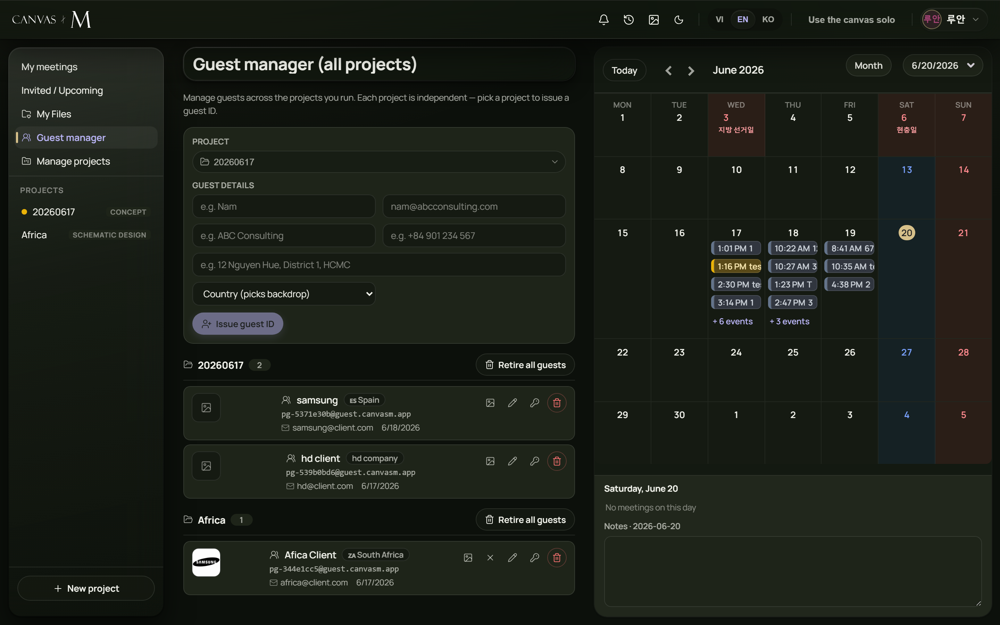

Inviting clients
Clients and outside guests don't get an account — they get a guest ID: a synthetic login and a one-time password you issue, scoped to a single project. Each guest is also a small contact card — representative, email, company, phone, address, country, and a logo — that you keep alongside the credentials. This chapter covers issuing, copying, editing, resetting, and retiring guests, both from inside a project and from the all-projects Guest manager.
A guest is a contact, not an account
A guest never signs in with their real email. Instead you issue a guest ID — the app mints a synthetic login and a temporary password that exist only for one project. You hand those credentials to the client; they use them to enter every meeting in that project, and nowhere else.
Guest access is independent per project. The hint above each issue form says it plainly: Issue a guest ID scoped to THIS project. The guest follows the project across every meeting. Each project is independent — other departments can't see it. A client invited into one project is invisible to every other project, which is how confidentiality between departments is kept. Around the synthetic login the app stores a contact card — representative name, real email, company, phone, address, country, and a company logo. Those are reference details only; they are never part of the sign-in identity.
The real email you record on the card is for your reference. The client signs in with the synthetic Login the app generates, never with their email — so the same person can be a guest of two projects under two unrelated logins, and neither project sees the other.
Per-project, or the all-projects manager
You can manage a project's guests from two places, and they share the same controls. Inside a project, open the project's detail page and expand the Project guests section; the Add guest shortcut next to Add member jumps you straight to its issue form. This view is scoped to that one project.
The second place is the centralised Guest manager — its own item in the left nav of the dashboard, labelled Guest manager, opening a page titled Guest manager (all projects). Here every guest you can manage is listed grouped by project, and a project picker at the top of the issue form lets you issue into any project you run without leaving the page. Its hint reads: Manage guests across the projects you run. Each project is independent — pick a project to issue a guest ID.
Issuing and managing guests is for the people who run a project — admin, leader, co-operator, or division head. A plain participant sees the project roster read-only with no Add guest shortcut, and an invitee never sees the guests section at all. The Guest manager nav item only appears for internal staff, and its list is scoped server-side to the projects you actually belong to.

- 1 Page hint — Manage guests across the projects you run…
- 2 Project picker (Guest manager only) — choose which project to issue into; lists only projects you run.
- 3 Guest details grid — Representative, Email (optional), Company, Phone, Address, and the Country (picks backdrop) select.
- 4 Issue guest ID button — disabled until a project is chosen and Representative is filled.
- 5 Credentials panel — appears once after issuing, with Login, Password, and Copy login + password.
- 6 Guests grouped by project, each group headed by its name, a count, and a Retire all guests button.
- 7 A guest row — logo, name, company, country, login, contact lines, and the action buttons (logo, edit, reset, revoke).
Issue a guest ID
- Open the issue form — expand Project guests on a project's detail page (or use Add guest), or open Guest manager from the dashboard nav.
- In the Guest manager only: open the Project picker and choose the project to issue into. It defaults to your first manageable project.
- Type the client's Representative name (placeholder e.g. Nam). This is the only required field.
- Optionally fill Email (optional), Company, Phone, and Address — reference details for your records.
- Optionally pick a Country from the flag list to set the client's entry-page backdrop; leave it on Country (picks backdrop) for the default.
- Press Issue guest ID. The button reads Issuing… while it works.
→ A new guest ID is minted for the chosen project and the credentials panel appears below the form, headed Guest ID issued. The form clears, and the guest now appears in the list grouped under its project.
Issue guest ID stays disabled until both a project is selected and Representative has real (non-space) text — leading and trailing spaces are trimmed before the name is saved. If the server rejects the request you get a toast: Couldn't issue the guest ID.
There is no self-service join link for clients here — guests don't request access, you issue it. If a client says they can't get in, check that you've sent them the synthetic Login from the credentials panel, not their email address.
Every field on a guest
| Field | Label / placeholder | Required? | What it's for |
|---|---|---|---|
| Project | Project — Pick a project | Yes (manager only) | Which project the guest ID is scoped to. Only projects you run are listed; in the per-project view it's fixed. |
| Representative | Representative — e.g. Nam | Yes | The contact person's name. Shown as the guest's name; falls back to the login if left blank on an old record. |
| Email (optional) — nam@abcconsulting.com | No | The client's real email, for your reference only. Never used to sign in. | |
| Company | Company — e.g. ABC Consulting | No | Client's company; shown beside the name in the roster. |
| Phone | Phone — e.g. +84 901 234 567 | No | Reference contact number, shown on the guest row. |
| Address | Address — e.g. 12 Nguyen Hue, District 1, HCMC | No | Reference address, shown on the guest row. |
| Country | Country — Country (picks backdrop) | No | ISO country with flag; sets the client's entry-page backdrop. Empty = the global default backdrop. |
| Logo | image button on the guest row | No | Company logo thumbnail (set after issuing, see below). |
Email, company, phone, address, and country are all free-text reference fields stored next to the synthetic login — they are never part of the auth identity. Country is the one with a visible side-effect: it chooses the backdrop the client sees on their entry page.
You can't choose the guest's login name or password — both are generated. The Reset password action mints a fresh password but keeps the same login, so a returning client keeps their identity.
Copy the login + password (shown once)
- After issuing, read the Guest ID issued panel. It shows Login and Password on two lines.
- Note the warning: Send this login + password to the guest. Shown only once — copy now.
- Press Copy login + password. The button flips to Copied ✓ for two seconds.
- Paste the credentials into your message to the client and send them on.
- Move on — the panel does not reappear, and the password is never recoverable.
→ The client now has a login and password that admit them to every meeting in this project. They enter on the client portal — no account, no email verification.
The password is displayed only once. There is no "show again". If clipboard access is blocked, the copy action falls back to a prompt box you can copy from by hand, so you never lose the credentials. If you miss the copy, use Reset password later to mint and copy a fresh one — the login stays the same.
Don't email the password before you've copied it from this panel — once you issue the next guest or reload, the panel is gone. Reset password is your recovery path, and it produces the same Guest's new password panel with a fresh Copy login + password button.
Edit details, reset, or revoke
- Find the guest in the list. Each row carries four action buttons on the right.
- Press the pencil (Edit details) to open the card inline; change any field and press Save, or Cancel to drop the edit.
- Press the key (Reset password) to mint a new password for the same login; the Guest's new password panel appears to copy.
- Press the trash (Revoke) to cut off one guest; confirm the prompt to proceed.
- Use Retire all guests in a project's group header to revoke every guest of that project at once.
→ Edits save immediately (toast Guest details saved). A reset gives the client a new password without changing who they are. A revoke removes their access while keeping their card and history.
Save stays disabled while Representative is blank — the name is required on edit too. Revoke asks: Revoke {label}'s access? They lose access — their details & history are KEPT (not deleted). Retire all guests asks: Revoke access for ALL guests of this project? They lose access — no data/history is deleted. and afterwards toasts Revoked {count} guests. Failures toast Couldn't save the guest's details., Couldn't reset the password., or Couldn't revoke the guest.
Revoking is reversible only by issuing a fresh guest ID — there is no "un-revoke". Because the card and history are kept, retiring guests at the end of a project is safe: you lose nobody's record, only their live access. In the per-project view the Retire all guests button sits at the bottom of the list; in the Guest manager it sits in each project group's header.
The three logo states
A placeholder image icon shows in the row's logo slot. The action button reads Upload logo — press it to pick an image file.
The uploaded logo renders as a thumbnail. A second button appears — Remove logo (the X) — to clear it. The toast Logo saved confirms an upload.
With a logo already set, the upload button's tooltip becomes Replace logo. Picking a new image swaps it in place.
Add a logo when you want the client's brand to show on their guest row. Files must be images and are capped at 2 MB by the server; a non-image or oversize file toasts Couldn't save the logo (image up to 2MB).
Guest actions at a glance
| Action | Button / icon | Effect | Confirms? |
|---|---|---|---|
| Issue | Issue guest ID | Mints a synthetic login + one-time password scoped to the project; shows the credentials panel once. | No |
| Copy credentials | Copy login + password | Copies login / password to the clipboard (or a prompt box if blocked); button shows Copied ✓. | No |
| Edit details | pencil — Edit details | Opens the contact card inline; Save writes, Cancel discards. Never touches the login. | No |
| Reset password | key — Reset password | Mints a new password for the same login; shows the Guest's new password panel to copy. | No |
| Upload / Replace logo | image — Upload logo / Replace logo | Sets or swaps the company logo (image, up to 2 MB). | No |
| Remove logo | X — Remove logo | Clears the logo back to the placeholder. | No |
| Revoke | trash — Revoke | Removes one guest's access; their card and history are kept. | Yes |
| Retire all guests | Retire all guests | Revokes every guest of one project at once; no data deleted. | Yes |
Every action on a single guest is mutually exclusive while it runs — pressing one disables that row's other buttons until it finishes, so a reset and a revoke can't collide.
Edit, reset, upload, and remove never prompt — they apply at once. Only the two destructive actions (Revoke and Retire all guests) ask first, and both spell out that history is kept.
Guest troubleshooting
Issue guest ID is greyed out — No project is selected, or Representative is blank (or only spaces).
Pick a project and type a real name; the button enables once both are set. → 21.5
No Guest manager item in the dashboard nav — The all-projects manager is internal-staff only.
Use the per-project Project guests section instead, or ask an admin. → 21.3
No Project guests section on a project page — You're a plain participant or invitee, who can't manage guests.
Only admin, leader, co-operator, or head see it. Ask the project's manager. → 21.3
Project picker shows No guests across your projects yet. / no options — You don't run any project the manager can issue into.
Become a member/owner of a project first; invitee access can't issue guests. → 21.3
I lost the password before sending it — Credentials show only once and aren't recoverable.
Press Reset password on the guest to mint and copy a fresh one; the login is unchanged. → 21.7
Client can't sign in with their email — Guests sign in with the synthetic Login, not their email.
Send them the Login string from the credentials panel, not the email on the card. → 21.7
Couldn't save the logo (image up to 2MB). — The file wasn't an image, or exceeded 2 MB.
Pick an image file under 2 MB (PNG, JPG, etc.). → 21.9
Toast Couldn't issue the guest ID. / …revoke the guest. — The server rejected the request (network or permission).
Retry; if it persists confirm you still manage the project. → 21.5
Revoking and retiring keep every guest's contact card and meeting history — they only remove live access. There is no permanent delete of a guest's record from these screens.